Installation
Add to Chrome
Visit the Chrome Web Store listing and click Add to Chrome, then confirm by clicking Add extension in the dialog that appears.
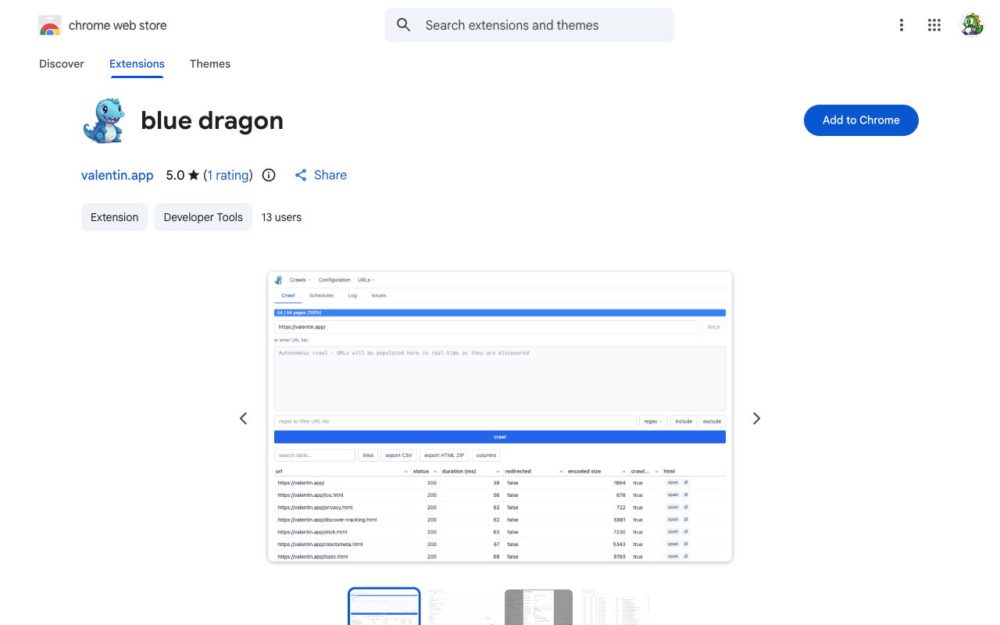
Open Blue Dragon
Click the dragon icon  in the Chrome toolbar. If you don't see it, click the puzzle-piece extensions menu and pin Blue Dragon. The extension opens as a full tab. Blue Dragon needs Chrome 121 or later.
in the Chrome toolbar. If you don't see it, click the puzzle-piece extensions menu and pin Blue Dragon. The extension opens as a full tab. Blue Dragon needs Chrome 121 or later.
Quick start: crawl a site
Choose what to crawl
Enter a start URL under Website, or switch to URL list, Sitemap or CSV. The defaults suit most sites, and everything else is under Advanced.
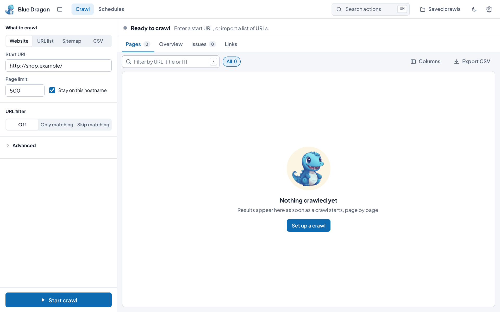
Start the crawl
Click Start crawl. Results appear row by row, and the status bar shows progress, speed and time left, with Pause and Stop always in reach. You can close the tab and come back: the crawl keeps running in the background.
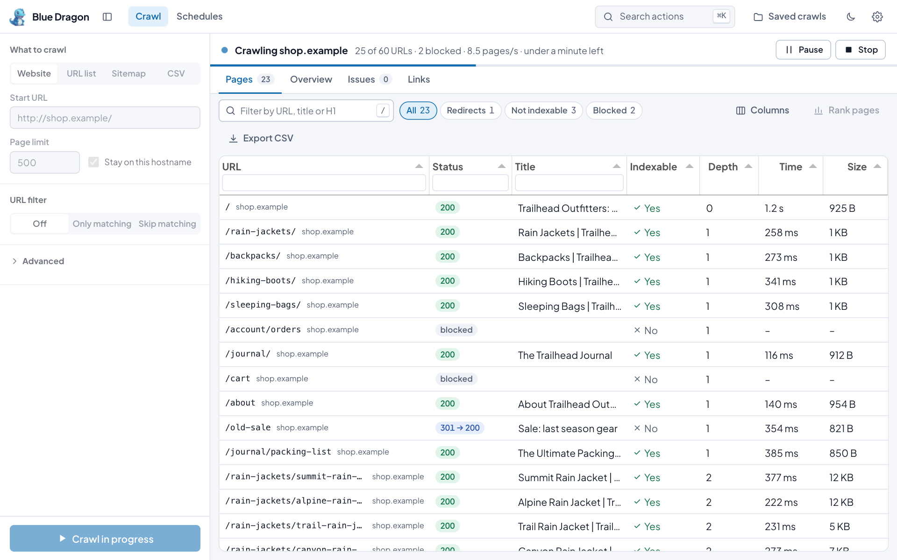
Explore the results
Each row is one URL. Use the quick filters to see errors, redirects or non-indexable pages, search with /, and click a column header to sort. Columns adds SEO, response, Open Graph and structured data fields.
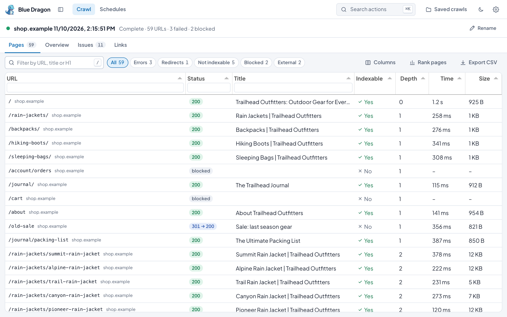
What you can crawl
| Source | What it does | Good for |
|---|---|---|
| Website | Starts at one URL and follows links, up to the page limit. | Full-site crawls without a URL list |
| URL list | Crawls exactly these URLs. Duplicates and invalid lines are dropped and counted. You can also add all links from one page. | Auditing a known set of pages |
| Sitemap | Loads a URL or file into the URL list, including .xml.gz files and sitemap indexes. |
Checking that what you submit to search engines works |
| CSV | Loads URLs from a file. Clicks and Impressions columns become table columns. |
Search Console or analytics exports |
A URL filter with a regular expression narrows any of these, without changing your list.
Overview
The crawl at a glance, updated while it runs. Click any number or row to see the pages behind it in the table.
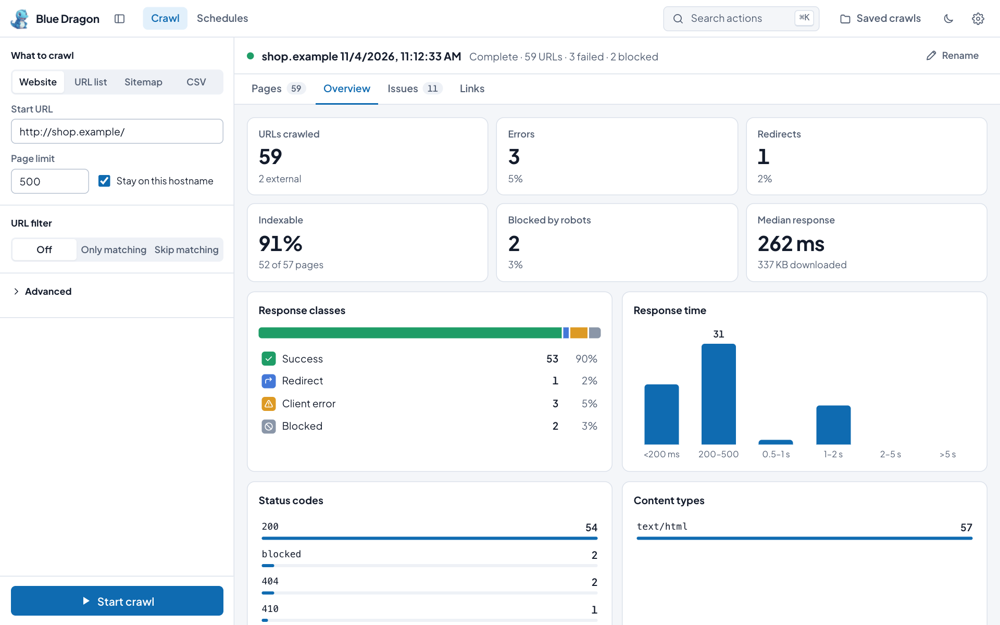
| Section | Shows |
|---|---|
| Totals | URLs crawled, errors, redirects, indexable share, blocked URLs, median response time |
| Response classes | Success, redirect, client error, server error, failed and blocked |
| Response time | How many pages fall into each speed range |
| Status codes | Count per HTTP status |
| Content types | Count per content type |
Issues
SEO checks across the whole crawl, most serious first. Click a row to open that page's details.
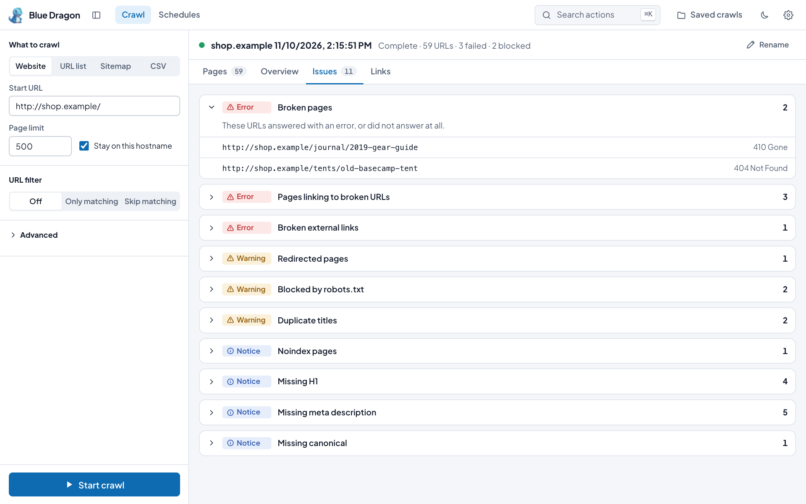
| Check | Severity |
|---|---|
| Broken pages (4xx, 5xx, no answer) | Error |
| Pages linking to broken URLs | Error |
| Broken external links | Error |
| Redirected pages | Warning |
| Blocked by robots.txt | Warning |
| Missing title | Warning |
| Duplicate titles | Warning |
| Multiple canonicals | Warning |
| Noindex pages | Notice |
| Missing H1, meta description or canonical | Notice |
| Truncated pages (over 5 MB) | Notice |
Page details
Click a row to open everything about that URL beside the table: the full redirect chain, response data, SEO fields with length hints, links in and out, hreflang, Open Graph, structured data and headers.
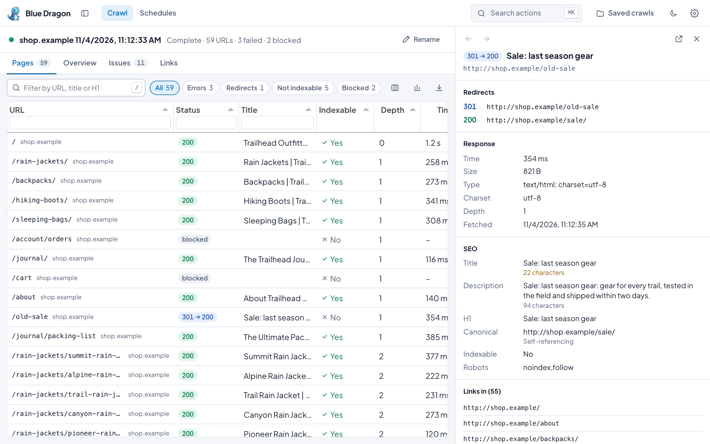
PageRank and CheiRank
Once a crawl has ended, click Rank pages in the Pages toolbar or on the Overview. Blue Dragon scores every crawled page from your site's internal links, right in your browser.
| Score | High for | Tells you |
|---|---|---|
| PageRank | Pages that strong pages link to | Where your internal linking sends authority |
| CheiRank | Pages whose links reach the most | Which pages work as hubs |
Scores are shown relative to the strongest page (100), and are saved with the crawl and included in the CSV export. nofollow, ugc and sponsored links pass no score, and external URLs and pages blocked by robots.txt are left out.
Where the rank sits
The Overview then charts rank by click depth, by site section and by kind of page. Rank piling up on shallow levels, or on errors and redirects, is what to look for.
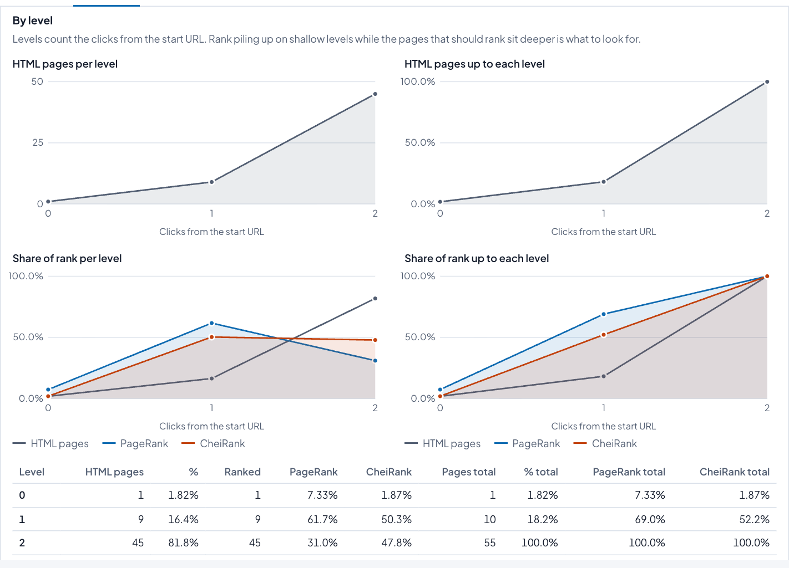
How evenly it is spread
Histograms show pages in multiples of the average rank, and a curve shows how much the strongest pages hold.
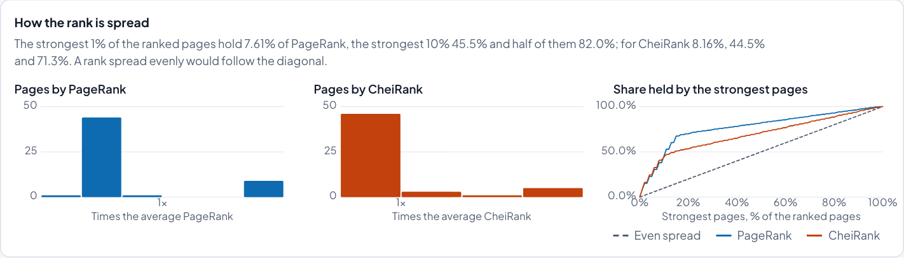
Authorities and hubs
Every page by its PageRank and CheiRank percentile. Click a cell or a button to list those pages in the table.
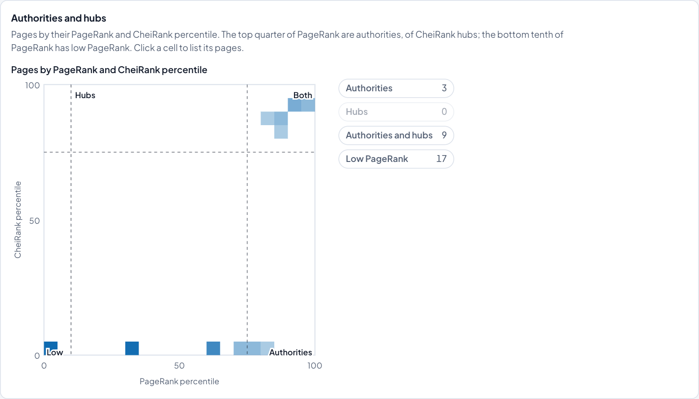
Key features
Fast and light
Up to 32 parallel requests. Only HTML is downloaded, and memory stays flat however large the crawl gets.
Crawls that survive
Pause, close the tab, or let Chrome stop the background worker. The crawl picks up where it left off.
Polite by default
Follows robots.txt and crawl-delay for the selected User-Agent, retries with backoff, and honours Retry-After. Overrides can be set per site.
Rich metadata
Title, description, H1, canonical, robots meta and X-Robots-Tag, hreflang, Open Graph, Schema.org data and every redirect hop.
Link analysis
PageRank and CheiRank on demand, with charts by level, section and page type, and a grid of authorities and hubs.
Scheduled crawls
Recurring crawls from hourly to weekly. They run in the background while Chrome is open, even with the tab closed.
CSV export
Exports the rows you see with all columns, including hidden ones, and opens correctly in Excel.
HTML archiving
Optionally keeps the raw HTML of each page in your browser. Preview a page safely, download it, or export a ZIP.
Built for the keyboard
Press ⌘K or Ctrl K to search every action, and / to filter the table.
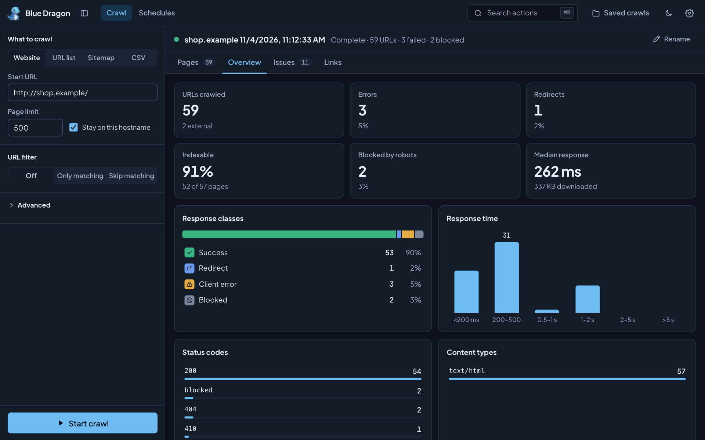
Upgrading from 0.0.1
Version 0.1.0 is a rebuild of both the crawler and the interface. Three things behave differently:
- Saved crawls are converted on first start. This is one-way: older versions can't read them afterwards.
- robots.txt is now enforced. The setting existed before but had no effect, so a site may show blocked pages that used to be fetched. If its robots.txt returns a server error or can't be reached, the whole site is blocked. You can turn this off under Advanced, or add an override for a site.
- Text extraction is gone, along with the
contentcolumn.